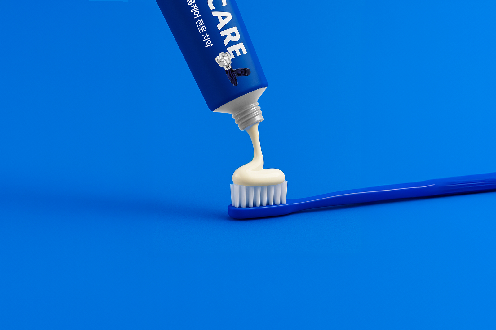

01 / 03THE PROJECT
디자인을 넘어,
더 나은 경험을 만듭니다.
사용자의 시선과 경험을 중심으로, 시각적인 아름다움과 편리한 사용성이 조화를 이루는 웹디자인을 추구합니다.
단순히 보기 좋은 화면을 만드는 것을 넘어, 브랜드가 가진 고유한 가치와 개성을 디자인에 자연스럽게 담아내고자 합니다.
YEAR2022~2024
SCOPEBrand · Website
TOOLSPHOTOSHOP · Illustration
SELECTED FRAMES
이미지를 선택하면 크게 볼 수 있습니다.
MY CONTRIBUTION
작은 디테일까지
브랜드답게.
01웹 디자인 · UI/UX100%
02웹 퍼블리싱100%
03비주얼 콘텐츠70%
프로젝트 내용과 기여도는 포트폴리오 구성용 예시입니다. 실제 작업 범위와 결과로 바꿔주세요.